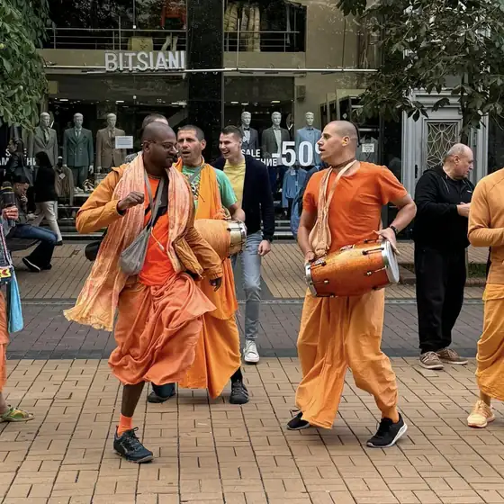
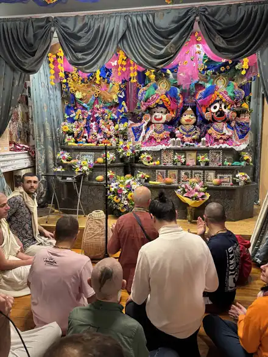
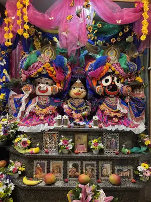
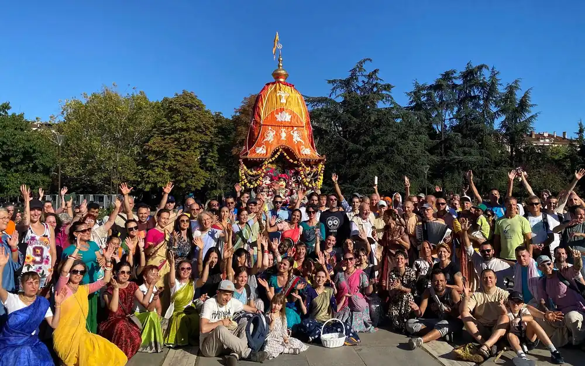
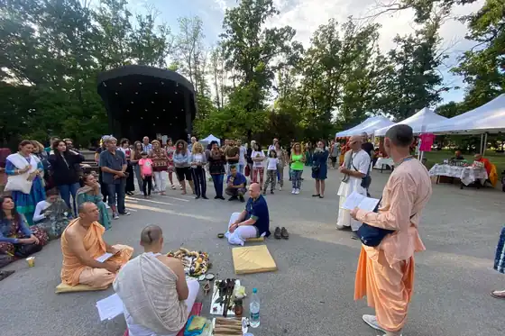
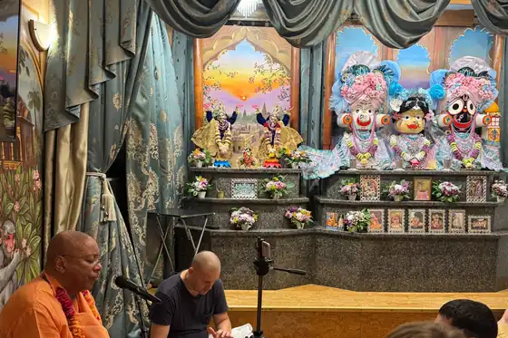
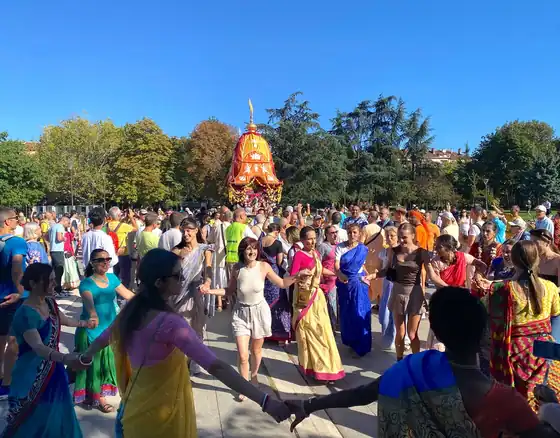

Древна духовна традиция · жив път днес
Общество за Кришна съзнание
Вероизповедание от традицията на Гаудия ваишнавизма: пътят на бхакти, любящата преданост към Бога, познат в Бхагавад-гита и Шримад Бхагаватам.
Намерете ни
Докоснете дума за значението ѝ
Кришна съзнание в България
В България изповеданието присъства от 1991 г. и е регистрирано вероизповедание, самостоятелно юридическо лице с дейност в цялата страна. Нашата мисия е да съхраняваме и споделяме това древно знание: чрез програми, образование, благотворителност и издаване на класическата ведическа литература.
Обществото за Кришна съзнание е българското вероизповедание на Международното общество за Кришна съзнание (ИСКОН), духовно движение, основано през 1966 г. в Ню Йорк от Бхактиведанта Свами Прабхупада.

Накратко
- В България
- вероизповедание от 1991 г.
- Храм
- София, кв. „Малинова долина“
- Ратха ятра
- от 1996 г.
- Всеки ден
- клас по Шримад Бхагаватам в 8:00
- В събота
- празнична програма от 15:30 до 19:30
- Традиция
- Гаудия ваишнавизъм
„Истинската религия означава да опознаем Бога и да Го обикнем, а средството за това в нашата епоха е възпяването на светите Му имена.“
Философията накратко
Ученията на Кришна съзнание отговарят на най-дълбоките въпроси на човека: Кой съм аз? Какъв е смисълът на живота? Какво е Бог?
В сърцевината на нашето учение стои разграничението между материята и духа. Тялото е материално и преходно, но в него обитава вечна духовна същност, душата. Когато душата забрави връзката си с Бога, тя се отъждествява с тялото и търси щастие в материалния свят, преминавайки през повтарящи се раждания и смърти според закона на кармата. Духовният живот започва с пробуждането от това забравяне.
Кришна: Бог като личност
Абсолютната Истина като върховна личност, изпълнена с любов и красота.
Душата, кармата и прераждането
Кои сме всъщност и как действат законите, които управляват живота ни.
Бхакти йога и маха-мантрата
Пътят на любящата преданост и възпяването на светите имена.
Свещените текстове
Бхагавад-гита, Шримад Бхагаватам и ведическата мъдрост.
Начин на живот
Вегетарианство, прасадам и четирите принципа на чистия живот.
Практика и празници
Програми, киртан и празничният календар на общността.

Бхакти йога е пътят на любящата преданост, най-достъпният духовен метод, открит за всеки.
Главната практика на бхакти йога е възпяването и повтарянето на светите имена на Бога. В традицията на Шри Чайтаня тази практика (наречена санкиртана, когато се извършва съвместно) е обявена за духовния метод, особено препоръчан за днешното време. Светите имена могат да се възпяват свободно, навсякъде, от всекиго.

Ратха ятра в София, 30-ти юбилеен фестивал, 21 септември 2025
Практика и празници
Програмите, музиката и празниците са сърцето на живота на общността, открити за всеки гост.
Програми и класове в храма в София
- Всеки ден, 8:00
- клас по Шримад Бхагаватам
- В събота, 15:30 до 19:30
- празнична програма
Работно време
- Понеделник до петък
- 7:30 до 9:00 и 18:00 до 18:30
- Събота
- 7:30 до 9:00 и 15:30 до 20:00
- Неделя
- 7:30 до 9:00 и 18:00 до 18:30
Киртан
Киртанът, съвместно пеене с традиционни инструменти, е особено характерен и създава радостна, обединяваща атмосфера. Гостите са добре дошли да наблюдават или да участват.
В съботната програма има киртан и лекция.
Празничен календар
Джанмащами
Празникът на появата на Кришна, един от най-големите в годината.
Програмата на 26 август 2024: 17:00 бхаджан, 18:00 Гаура арати, 18:45 абхишек, 20:00 лекция, от 21:00 до 00:00 истории и бхаджан, 00:00 даршан и прасадам.
Гаура Пурнима
Появата на Шри Чайтаня Махапрабху.
В храма в София: 14 март 2025.
Шрила Прабхупада Авирбхава
Програмата на 27 август 2024: 17:00 бхаджан, 18:00 Гаура арати, 18:30 лекция, 19:00 Гуру пуджа и абхишек, 20:00 прасадам.
Рама Навами
Програмата: 15:30 киртан, 16:00 абхишек, 17:00 лекция, 18:00 Гаура арати, 19:00 прасадам.


Бхакта програма 2024: Въведение в Бхакти
Лекциите ще бъдат в Храма в София всяка вечер (без събота) от 18:30 до 20:30. Теми: философски концепции, ведическата култура, вайшнава етикет, история на Гаудия вайшнавизма, приносът на великите ачарии, джапа работилница, начално обучение в киртан и как да установим и поддържаме олтар на Кришна вкъщи.
„Поставете здрави основи на вашия духовен живот и изпитайте благотворното влияние на садху санга.“ За желаещите има допълнително обучение с живеене в ашрама.
Ратха ятра в България
Ратха ятра се провежда в България от 1996 г.
- 31-ви фестивал
- 23 август 2026 г. (неделя), от 11:00 до 21:30, Лятната сцена в парк „Борисова градина“, София
- Шествие с колесница
- от 15:00 до 18:30, през основните пешеходни зони на града, включително ул. „Граф Игнатиев“ и бул. „Витоша“, в съпровода на музика, възпяване на мантри и много танци
- Колесницата
- на Бог Джаганнатха, „храм на колела“
- През деня
- шатра „Въпроси и отговори“, щанд с ведическа вегетарианска кухня, щанд с книги, ателие по индийска култура, безплатни йога курсове, детски кът; вегетарианска храна за всички гости
- На сцената
- киртан концерт, кратка беседа за значението на фестивала, класически индийски танц, мантра рок, огнено шоу
- 30-ти юбилеен
- 21 септември 2025 г.: „Хиляди хора преминаха през фестивала.“
- Организатор
- Общество за Кришна съзнание, България

Книги на български език
Книгите са основата на изповеданието, изворът, от който всеки може да почерпи знание от първоизточника. По тях се водят ежедневният клас по Шримад Бхагаватам и лекциите.
Бхактиведанта бук тръст (БиБиТи) е учреден от Шрила Прабхупада през 1972 г. и е най-големият издател на класическа ваишнавска и ведическа литература в света.
Бхагавад-гита каквато е
Най-известният духовен текст на Индия с превод и коментар на Прабхупада. Ново редактирано издание: „След 25 години имаме огромното щастие да ви предложим“.
Шримад Бхагаватам
„Зрелият плод на ведическото знание“, в многотомно издание. Очаквайте скоро издаването на Пета Песен на Шримад Бхагаватам.
Шри Чайтаня-чаритамрита
Житието и ученията на Шри Чайтаня Махапрабху.
Нектарът на предаността
Наука за същината на бхакти, пътя на чистата преданост.
Маха-мантрата
Харе Кришна, Харе Кришна, Кришна Кришна, Харе Харе Харе Рама, Харе Рама, Рама Рама, Харе Харе
Намерете ни
Тази мантра се нарича маха-мантра: „великата мантра за освобождение“. В нея се обръщаме към Бога (Кришна и Рама) и към Неговата вътрешна духовна енергия (Харе) с молба за любящо служене. Възпяването ѝ пречиства съзнанието, успокоява ума и пробужда заспалата любов към Бога. Практикуващите я повтарят както съвместно с музика (киртан), така и тихо, броейки на молитвена броеница (джапа).
Гостите са добре дошли да наблюдават или да участват.
Храмът в София: кв. „Малинова долина“, бул. „Климент Охридски“ 119